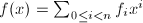
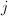
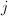
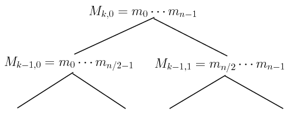
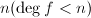
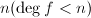
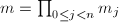
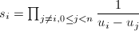
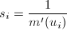

隐藏目录
 求值算法
求值算法
提起求值算法,我们都会想起最著名的Horner规则,即对于,利用下式来求其值:
在该算法中,需要计算总共次乘法和加法.如果要同时计算 个不同点处多项式的值,则需要
个不同点处多项式的值,则需要 的计算.
的计算.
下面给出一种快速求值算法,其计算复杂度为,其中 为次多项式乘法计算的复杂度(见[1]).为了说明算法,我们取是2的一整数次幂,需要求值的点为,并且令.下面构造一棵完全二叉树,以表示从叶(
为次多项式乘法计算的复杂度(见[1]).为了说明算法,我们取是2的一整数次幂,需要求值的点为,并且令.下面构造一棵完全二叉树,以表示从叶( )往上数第层,从该层左往右数第个结点,并且
下图表示其结构:
)往上数第层,从该层左往右数第个结点,并且
下图表示其结构:
|  |
| $M_{i,j}$二叉树示意图 |
其中每个叶结点都是一次式.下面的算法给出了上面树的构造算法:
 循环到
循环到 ,做下面第3步,
,做下面第3步, 循环到,
循环到, .
.利用上面的构造的二叉树,我们可以实现快速求值算法.
 和个点,
和个点, 则输出
则输出
插值算法
首先我们想到了著名的拉格朗日插值(Lagrange interpolation)算法,设已知个点和多项式在这些点上的值,如果我们引入下面一些记号:,,,则Lagrange插值的结果可以表示为:
这是一个复杂度的算法.
下面提出的快速插值算法,其复杂度也为.我们考虑问题的核心是要求上面的插值,首先我们要求出,因为 故.现在令,并设是2的整数次幂.
 个点,求出
个点,求出 ,
,参考文献
[1]Modern Computer Algebra, Cambridge University Press, 2002.